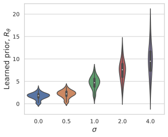

What's in a Prior? Learned Proximal Networks for Inverse Problems
@ ICLR 2024
@inproceedings{fang2024whats,
title = {What's in a Prior? Learned Proximal Networks for Inverse Problems},
author = {Zhenghan Fang and Sam Buchanan and Jeremias Sulam},
booktitle = {The Twelfth International Conference on Learning Representations},
year = {2024},
}
TLDR:
Learned proximal networks (LPN) are deep neural networks that exactly parameterize proximal operators.
When trained with our proposed proximal matching loss, they learn expressive and interpretable priors
for real-world data distributions
and enable convergent plug-and-play reconstruction in general inverse problems!
Overview
We propose learned proximal networks (LPN), a class of neural networks that exactly implement proximal
operators
of general learned functions, and a new training loss, dubbed proximal matching, that provably promotes
learning of the proximal of an unknown prior. LPN achieves state-of-the-art performance for inverse problems,
while enabling precise characterization of the learned prior, as well as convergence guarantees for the
Plug-and-Play algorithm.
Experiments
Learning the proximal for a Laplacian distribution
LPN with proximal matching learns the correct proximal operator for a Laplacian distribution, while either
$\ell_2$ or $\ell_1$ loss fails.
Learning a prior for MNIST images
LPN-learned prior faithfully captures the distribution of natural hand-written digit images.
The learned prior, $R_\theta$, evaluated at images corrupted by additive Gaussian noise with standard deviation
$\sigma$:
The learned prior, $R_\theta$, evaluated at the convex combination of two MNIST images $(1-\lambda)\mathbf{x} +
\lambda \mathbf{x}'$, showing that the prior faithfully captures the nonconvex nature of data distribution:
The learned prior, $R_\theta$, evaluated at images blurred by Gaussian kernel with standard deviation $\sigma$:


Results of LPN for real-world inverse problems
Deblurring for Gaussian blur kernel with standard deviation $\sigma=1.0$ and noise level $\sigma=0.02$:
Deblurring with $\sigma=1.0$ and noise level $\sigma=0.04$:
Sparse-view tomography (undersampling rate $\approx$ 30%):
Compressed sensing (compression rate = 1/16):
Acknowledgements
This material is based upon work supported by NIH Grant P41EB031771, the Toffler Charitable
Trust, and the Distinguished Graduate Student Fellows program of the Kavli Neuroscience
Discovery Institute.
This website template was adapted from Brent Yi's project page for TILTED.